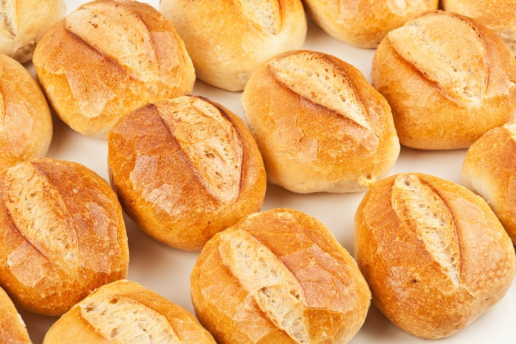
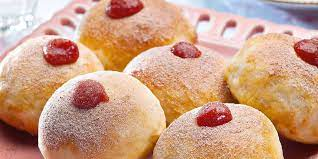
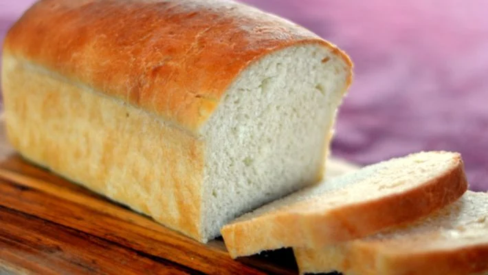

Ki pão
A melhor pardaria do para você
  A historia do ki pão
O ki Pão é uma das mais novas e promissoras empresa do Brasil, tudo graças os esforços de dois grandes jovens empreendedores Matheus Felipe e Mateus Dias, que se conheceram na univercidade de oxford no Reino Unido aonde estavam fazendo intercambio, ambos cursavam adiministração e juntos elaboram uma grande ideia, que posteriormente iria se tronar um grande negocio. Apois formados os amigos voltaram para o Brasil e começaram a colocar seus planos em pratica, primeiramento procuraram patrocinio, e em seguida apois conseguir um patrocini de um empresario eles fundaram sua padaria em um dos grandes polos comsumidore, na cidade de São josé dos campos, uma cidade do interior paulista. A oportunidade era perfeita eles estavam em um dos maiores polos tecnologicos do Brasil, e um de seus planos era a integração entre impresa, funcionario, clientes e o brasil de uma forma geral e posteriormente com o resto do mundo, e hoje eles são uns dos maiores empresarios brasileiro.
Fundadores
Matheus Felipe nasceu em Taubate-SP e la viveu ate o seus 3 anos e depois veio com sua mãe para Caico-RN, la ele desenvolvel uma facinação pelo comercio depois de um de viagem com seu primo que estava viagando a trabalho e por isso Matheus teve a oportunidade de obsevar como funcionava o comercio, quando completou 18 ele foi aprovado para uma bolsa em oxford, com muito esfoço e sacrificio ele conseguiu e foi la que conheceu seu amigo Mateus Dias com quem futuramente fundaria a padaria Ki Pão
Mateus Dias